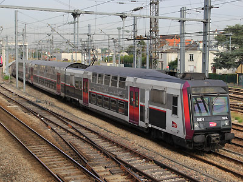

Ferrovia - 03 Juin 2012 - Mise à jour : 27 Juillet 2015
Z 20500 - Z 92050
Z2N asynchrones
Les Z 20500 sont des éléments automoteurs bicourants à deux niveaux conçus pour le service de Banlieue Parisienne et construits à 194 exemplaires. Elles roulent sur les RER C et D ainsi que l'ensemble des réseaux Transilien.
Elles peuvent fonctionner en unités multiples entres elles et avec les Z 5600, Z 8800 et Z 20900 qui composent le parc de "Z2N".
Les Z 20500 ont eu des cousines régionales dans le Nord Pas-de-Calais : Les Z 92050. Semblables à des Z 20500 quadricaisses équipées de remorques longues, elles se distinguaient par une face jaune et des logos TER Nord/Pas-de-Calais. Un demi-étage est réservé par un compartiment de 1ere classe, qui a disparu des rames Transilien.
En 2015, ces rames ont été rachetées par le STIF et transformées en Z 20500 :
Z 92051-52 à 92061-62 renumérotées Z 20889-90 à Z 20899-900.
On notera donc une bizarrerie : la Z 20900 ne fait pas partie de la série Z 20900 mais est une Z 20500 ex-Z 92050.
Les Z 20500 ont eu une descendance dotées d'onduleurs IGBT : les Z 20900 (dont la numérotation commence par Z 20901-02)
Composition des rames
Les rames ont diverses compositions :
M+R+R+M avec deux remorques longues ZR 201500 / 202500 comtemporaines des Z 20500.
M+R+R+M avec deux remorques courtes ZR 25600 ou 35600 identiques aux remorques des Z 5600 et 8800.
M+R+R+R+M avec trois ZR (201500, 202500, 203500)
M+R+R+R+M avec deux remorques courtes + une ancienne VB2N transformée en ZR mais reconnaissable par l'aménagement intérieur en banquettes et des loquets d'ouverture des portes (rames "P").
Depuis 2013, des rames à quatre caisses longues se voient attribuer une remorque courte, ex-VB2N, qui était auparavant utilisée sur les Z 5600 Evolys.
Quelques données techniques
Constructeur : Alstom
Tension d'alimentation : continu 1,5 kV et monophasé 25 kV, 50 Hz
Chaîne de traction : onduleurs de courant à thyristors GTO - Moteur asynchrones
Motorisation : 2 moteurs par bogie, 2 bogies moteurs par motrices.
Puissance totale : 2800 kW
Longueur : 99 à 130m
Masse : 263 à 366t
La rame 40A (Z 20579-ZRB 201579-ZRB 202579-Z 20580) possède la remorque 201579 construite en acier inoxydable. Lorsque la rame roulait sur le RER D, cette remorque possédait une livrée spécifique mettant l'inox en valeur. Depuis, la rame fut mutée sur le RER C. La remorque, repeinte en livrée Ile-de-France, restait reconnaissable par les nervures qui renforcent les faces latérales et la toiture. La rame 40A porte désormais la livrée Carmillon.
Pour plus d'info :
La fiche Z 20500 sur Wikipedia
Fiche technique des Z 20500 de Florent Brisou
L'inventaire des Z 20500 sur Trains du Sud-Ouest
La Z 20568/69, deux remorques longues sur le RER C, mission ELBA (01/04/2007)
La Z 20605/06, deux remorques courtes, à Cormeilles en Parisis (08/05/2006)
La Z 20667/68 cinq caisses sur le RER D, mission ZUCO (11/09/2011)
UM de rames "P" 55 D et 52 D à Vert de Maisons (17/06/2012)
La Z 92056-55 TER Nord Pas-de-Calais en gare de Lille-Flandres
La Z 20806/05 RER C, mission SARA à Lardy (10/09/2011)
La Z 20846/45 RER C, en livrée STIF/Carmillon (09/11/2012)

La Z 20874/73 RER C passe à Ermont Eaubonne (19/08/2015)
La rame 40A (Z 20540/39) RER C, avec la remorque inox en livrée STIF/Carmillon (Ermont Eaubonne, 19/08/2015)